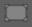

Course de simulation
Pour obtenir des informations détaillées sur la façon dont la séquence de processus a été définie, vous pouvez exécuter une simulation.
Simulation IHM
Cette page permet d’exécuter une simulation pour le programme. Le nom du programme et sa dimension sont affichés en haut. Il est possible de lire, mettre en pause et réinitialiser la simulation. Le curseur montre la progression de la simulation. Il peut être déplacé vers la gauche pour rembobiner ou vers la droite pour avancer.
Ce bouton est utilisé pour zoomer dans le programme.
 Ce bouton est utilisé pour amener le programme au point d’origine.
Ce bouton permet de faire un zoom arrière dans le programme.
Ce bouton est utilisé pour déplacer le programme vers la gauche.
Ce bouton est utilisé pour déplacer le programme vers la droite.
Ce bouton est utilisé pour déplacer le programme vers le haut.
Ce bouton est utilisé pour déplacer le programme vers le bas.
Appuyer sur terminé pour fermer la fenêtre de simulation.